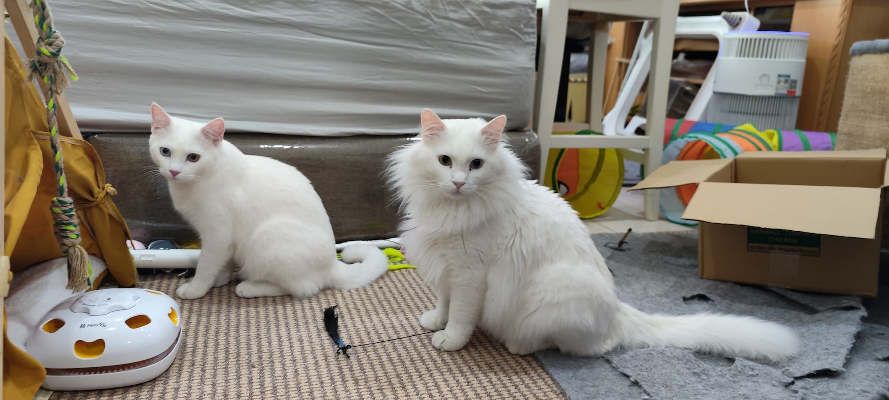
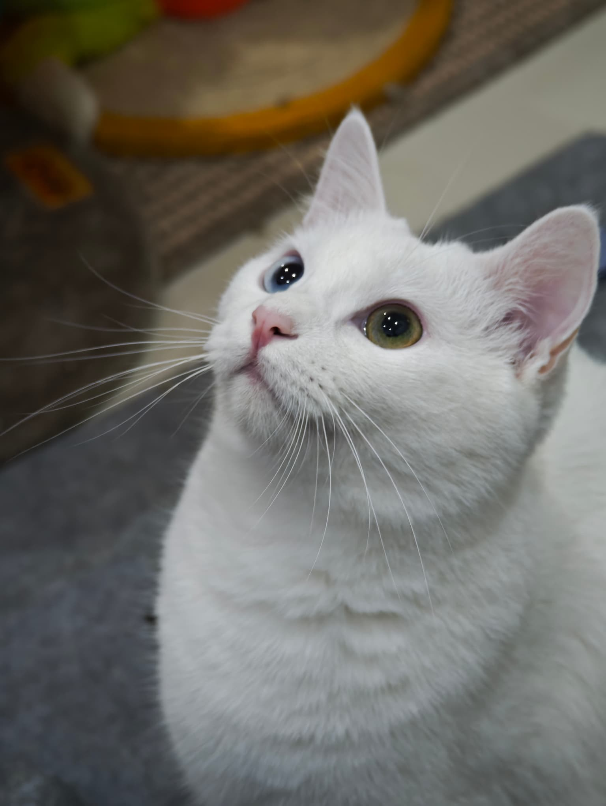
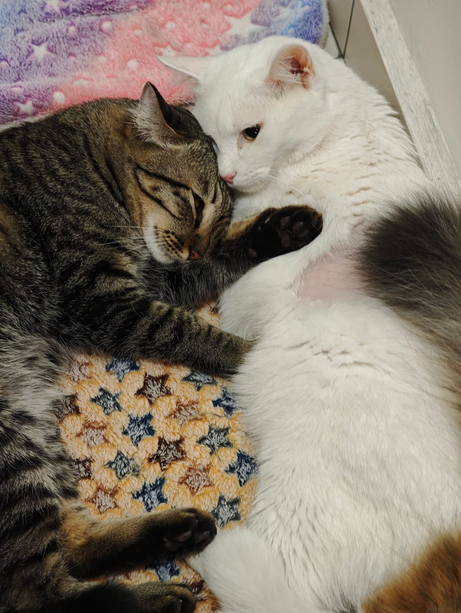
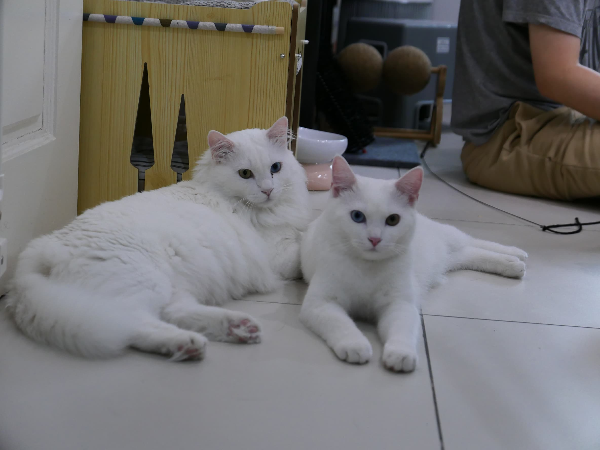

肥婆进屋之后不久，生下了三只猫。大哥出生的那一刻，我们呆住了。
雪白的毛，异瞳——一蓝一绿，和傻猪99%像。
原来傻猪在街头流浪的时候，已经和肥婆相遇了。他没有告诉我们，但血脉不说谎。小白就这样出生了——傻猪的儿子，在我们客厅来到这个世界。

小白长大后，越来越像傻猪。同样的白毛，同样的异瞳，同样的慵懒。
但他比傻猪更亲人。傻猪有时候傲娇，小白却总是温柔地靠近你，把头埋进你手心里。
他和小黑也最要好——那只后来才来的黑猫，和小白形影不离，一黑一白，像太极的阴阳。


小白病了。
SLE——系统性红斑狼疮，是免疫系统攻击自己身体的病。在猫咪里极为罕见，没有人知道为什么会发生，也没有人能预防。
我们带他看了很多医生，做了很多治疗。但这种病，不是努力就能战胜的。
在他最后的日子里，傻猪和肥婆轮流守在他身边，轻轻舔他——就像猫咪世界里最古老的安慰仪式。
小白离世的前一晚，我们把他抱出来。
虎斑仔靠了过来——那只平时不让人摸的猫，静静窝在小白身边，一夜没走。
没有人叫他来。他自己知道。

小白走后，我们发现一件事——傻猪的软便问题，不知道什么时候好了。
兽医说，可能是小黑生病期间用的某种治疗，间接帮助了傻猪。
生命的缘分就是这样——来的时候带来惊喜，走的时候留下礼物。
小白在我们家出生，在我们怀里长大，在我们陪伴下离开。他这一生，是被爱着的。
